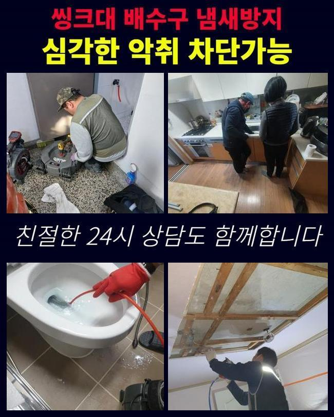
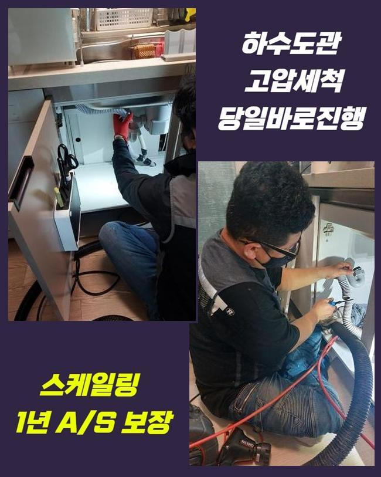
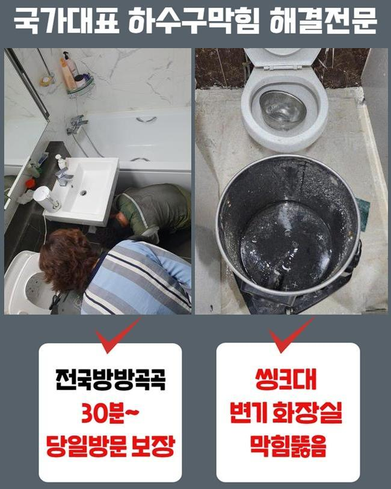
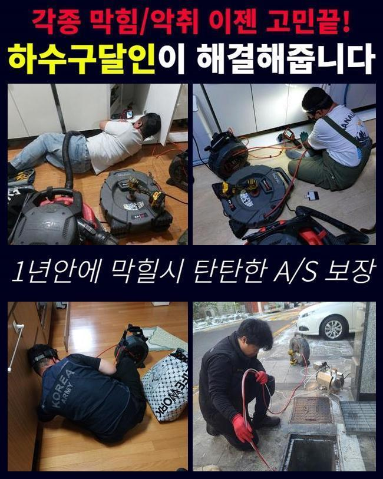
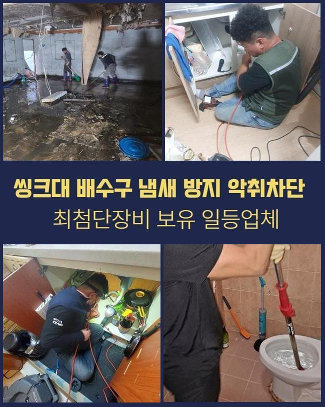
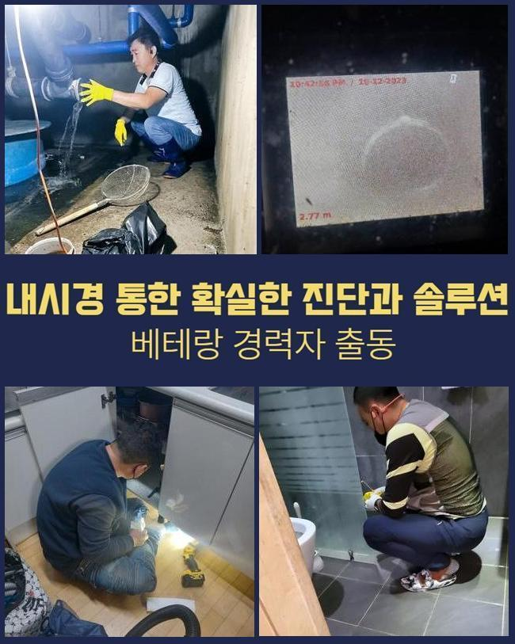

🏠 인천 백석동씽크대역류 불로동 배수로뚫기 누수공사
인천 싱크대막힘 전문 시공 후기

📋 작업 개요
- 위치: 인천
- 서비스 유형: 싱크대막힘, 배관막힘, 맨홀막힘, 누수수리, 역류해결, 뚫는업체, 고압세척, 설비공사
- 작업 일시: 2024. 11. 20. 17:09
- 업체명: 하수구수사대 (010-5615-2118)
🔍 문제 상황
인천 백석동씽크대역류 불로동 배수로뚫기 누수공사
물이 갑자기 안내려갈때 다양한 수단으로 처치하려다가 결론적으로 기공에게 의뢰하곤 하는데요
그러한 상황에 견적금에 관해 물으시는 분이 많은데요
공사비는 어디서 작업하는지 또 리스크는 얼마큼인지에 따라 결정된다고 볼수있죠
작업하는 관로의 크기와 수량도 파악하여 공사비에 추가되기도 한다는걸 고지드립니다
배관수리는 간단한 접근법으로 처리되는게 아니에요
그러므로 덮어두고 싼 곳을 검색하기보단 충분한 수행능력을 가진데서 공사하는게 좋아요
이번 글에서는 그저께 통수문제로 해결한 지점을 차근차근 말씀드릴까 합니다
의뢰하신 분께서는 주차장의 맨홀부근에서 오취가 지속해서 퍼지고 가끔씩 하수가 넘치기도 한다고 하시네요
정상이라면 구린내 등은 내부에서 머물다 소멸되어야하고 하수의 유입이 증가하였다고 하여서 역류까지 일어나지는 않죠
마땅히 폭우가 지속되는 상황에는 순간에 배수시스템의 가용능력을 초과한 빗물이 유입되면서 토출되는 일이 생기기도 하지만 통상적인 상황에서는 그런일이 잘 안일어나죠
그러므로 이 현장은 수리가 필요한 상황이라 추정할수 있었죠
현장상황을 파악하니 주차장 인근에서 오취가 지속해서 퍼지고 있었고 주변을 보니 역류증상도 확인이 가능했어요

🔎 원인 분석
💡 전문가 진단: 정밀 진단 장비를 사용하여 슬러지의 고착 여부를 판명하고 타격/세척 작업을 실시했습니다.
일단 정확한 상태를 점검하려 내시경cctv를 집어넣었어요
관찰해보니 여러사람이 내버린 이물들이 집약되는 거대한 공용파이프가 시설되어 있었죠
중앙 배수관은 여러가정에서 나온 생활하수를 처리하는 업무를 담당합니다
각집에서 버린 이물질들이 이곳에 모이므로 장애가 곧잘 생기는 처소입니다
정례적인 진단으로 문제가 생겼는지 검사하고 예방하는게 합당하겠지만 적합하게 실시되지 못할때가 많답니다
그러므로 바로 사용상에 불편이 없다고하여 지속해서 그럴거라고 이해하시면 안돼요
금번 지점에서도 마찬가지 패턴으로 배관카메라로 관찰하니 문제가 일어난 관 내측에 침전물이 고착화된걸 확인되었어요
파이프막힘을 야기하는 잔재 가운데에서 상당부분을 차치하고 있는건 유분찌꺼기들입니다
기름성분은 관로 내부에서 굳어지면서 점차적으로 사이즈를 키워나가게 된답니다
본 현장은 간단히 한집에서 시작된것이 아니었기 때문에 합당하게 마무리하려면 작은 파이프를 대상으로 활용하는 기기들보다는 가동력이 높은 기구를 적용할필요가 있다고 판단을 했어요
우선은 샤프트기계를 돌려서 하수관에 잔류하는 찌꺼기들을 제거하였는데요
하지만 세밀한 부분들까지 샤프트장비로만 처리하는건 다소 무리가 있는 생각이고 효율성을 높이려면 여러 기능의 장비를 가용할 인프라가 요망돼요
단편적인 도구만으로 전체 수리를 진행하려한다면 다양한 공정에 부정적인 결과물을 줄수도 있죠

🔧 작업 과정
이에 그래서 수선을 말할것도없고 부가적인 결함이 일어날수도 있단걸 명심하셔야 하겠습니다
그렇기에 전문가의 진단이 불가결하다고 말씀해 드려요
우리들은 고속물세척 기계를 사용하여 막힘에 대처하였어요
해당 기기는 강인한 압력으로 전원을 작동해 날카로운 물압력을 통하여서 하수관 안쪽의 노폐물을 긁어내고 관로 전체를 세척하는 기능을 하죠
고압세척기는 세부적인 강도를 바로바로 바꿀수 있어서 내부시공을 비롯해서 외부에 설비된 관로에도 활용하고 있죠
관로를 뚫는 과정에서는 세기의 가감이 요구될수 있답니다
강인한 압으로 배관을 세정하는 업무도 존재하며 높은 온도가 요망되는 정황도 있어요
해당하는 사안들도 비용적인 내용에 반영된단걸 말씀드려요
이날 배관 정체상황 해소를 대상으로한 세척과정에서도 의뢰인과 소통하며 시행했고 내시경설비로 조사해보니 관로 일부분에만 노폐물이 쌓여있는 상황이었기에 예측보다 민첩하게 처리할수 있었죠
공사를 종료한후엔 관로 탐지로 의뢰자께서 확인하시게끔 하였습니다
해당 과정중 파이프가 휘어진 지점을 확인하였는데 해당 부위는 이물누적이 일어날 확률이 높아 교체하는 것이 좋아보였죠
그리고 그로 인해 금이 가서 누설이 일어날수도 있는데요
따라서 그런 일들이 터지기전에 미리미리 수리를 하는것이 마땅합니다
누수증상이 표출되면 배수설비들 밖에 벽면이나 바닥쪽에도 손실을 가할수 있답니다
그렇게되면 수리부담은 더한층더더 커지게 될텐데요
고객께서 즉각 교체하길 바라셔서 준비한 부품을 통해 대체공정을 수행하였어요
전반적인 공정을 꼼꼼히 말씀드려가며 시공을 해나갔고 이후 상황에 관한 주의를 기울여야할 사안도 말씀해 드렸답니다
설비적인 문제를 점검해보니 고깃집에서 음식폐기물과 폐기름을 개수대로 쏟아붓는 정황이 파악됐죠
그런 물질들은 관로에 투입하면 저온상태가 되면 딱딱해지고 점차 노폐물들이 쌓이게 됩니다
그때문에 배수관 길목이 축소되고 배수를 저해하기도 한답니다
기름때는 수분과 합쳐져 잔재들이 쌓일수있는 환경을 마련하는데 그 물질이 하수관에 누증되어 점점 석회성분들까지 뒤엉키는 문제가 이어지죠


✅ 작업 완료
관로 막힘현상이 다시 일어나지 않게 기름분리에 주의하시게끔 말씀해 드렸답니다
그것은 환경오염 방지와 개별 배관유지에도 중대한 사항이죠
마무리 단계로 건축물 내측으로 이동하여서 하수관 정리를 거듭하여 이행하며 관로에 부착된 이물들을 세척하고 배수시험을 한뒤에 내시경설비를 활용하여 재확인하는 과정을 거쳤습니다
저희측은 여러종류의 수선공구들을 갖추고 있을 것이며 주말이라도 작업이 가능하죠
올바른 방책으로 작업을 진행하고 고난도 시공도 안정적으로 정리해드릴수 있어요
저희는 상세한 조사를 우선해서 시행해드리니 배관고장으로 진단이 요구된다면 시간에 구애받지 마시고 전화해 주십시오




⚠️ 베란다 누수 및 방수 관리 방법
- ✅ 비가 많이 올 때 창틀 주변이나 아래층 천장에 얼룩이 생기는지 정기적으로 확인해 보세요.
- ✅ 우수관 주변 실리콘 마감이 들뜨거나 깨진 틈새가 있는지 손상 여부를 수시로 체크하세요.
- ✅ 베란다 바닥 타일의 줄눈(메지)이 소실되면 그 틈으로 물이 침투하여 누수가 유발됩니다.
- ✅ 누수 의심 증상 발견 시 방치하면 아래층 손실이 커지므로 즉시 전문가의 진단을 받으십시오.
💡 핵심 정리
- 확실한 장비 작업(내시경 점검 및 샤프트 스케일링)으로 원인을 뿌리 뽑습니다.
- 작업 후 1년 이내에 동일한 부위 재발 시 100% 무상 A/S 서비스를 보장합니다.
- 서울 · 경기 · 인천 전 지역에 24시간 언제든 긴급 출동할 수 있도록 항시 대기 중입니다.
❓ 자주 묻는 질문 (FAQ)
🚨 인천 싱크대막힘 문제로 고민이신가요?
정확한 원인 진단과 확실한 시공으로 재발 없는 해결을 약속드립니다.
24시간 긴급 출동 | 서울 · 경기 · 인천 전지역 | 1년 내 재발 시 무상 A/S